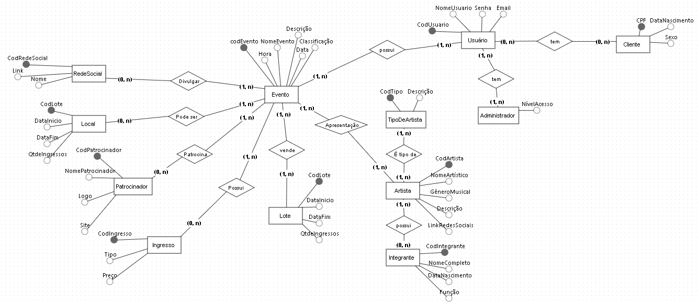

MusicFest: Sistema de Gestão de Eventos Musicais
1. Introdução
O MusicFest é um sistema de gestão de eventos musicais projetado para otimizar o planejamento, organização e controle de festivais e shows. Este documento apresenta a estrutura da base de dados do sistema, descrevendo as entidades, seus atributos, os relacionamentos entre elas, e os requisitos funcionais e não funcionais do sistema. O MusicFest visa proporcionar aos organizadores, artistas e público uma plataforma unificada e eficiente para gerenciar todos os aspectos de um evento musical.
2. Modelagem Conceitual
A modelagem conceitual de dados é fundamental para representar a estrutura da informação de forma clara e abstrata, independente de detalhes de implementação. No contexto do MusicFest, a modelagem conceitual, geralmente representada por um Diagrama de Entidade-Relacionamento (DER), define as principais entidades e seus relacionamentos, servindo como base para a construção do sistema.
3. Entidades e Atributos
3.1 Artista:
- CodArtista (Chave Primária): Identificador único do artista.
- NomeArtístico: Nome artístico do artista/banda.
- GêneroMusical: Gênero musical predominante (ex.: Rock, Pop, MPB).
- Descrição: Breve biografia ou descrição do artista.
- LinkRedesSociais: Link para as redes sociais do artista.
3.2 TipoDeArtista:
- CodTipo (Chave Primária): Identificador único do tipo de artista.
- Descrição: Descrição do tipo de artista (ex.: Banda, Cantor Solo, DJ).
3.3 Integrante:
- CodIntegrante (Chave Primária): Identificador único do integrante.
- NomeCompleto: Nome completo do integrante.
- DataNascimento: Data de nascimento do integrante.
- Função: Função do integrante na banda/grupo (ex.: Vocalista, Guitarrista).
3.4 Evento:
- CodEvento (Chave Primária): Identificador único do evento.
- NomeEvento: Nome do evento (ex.: Rock in Rio, Festival de Inverno).
- Data: Data de realização do evento.
- Hora: Horário de início do evento.
- Classificação: Classificação indicativa do evento.
- Descrição: Descrição detalhada do evento.
3.5 Local:
- CodLocal (Chave Primária): Identificador único do local.
- NomeLocal: Nome do local (ex.: Estádio do Maracanã, Parque Ibirapuera).
- Capacidade: Capacidade máxima de público do local.
- Endereço: Endereço completo do local.
- Telefone: Telefone para contato do local.
3.6 Ingresso:
- CodIngresso (Chave Primária): Identificador único do ingresso.
- Tipo: Tipo de ingresso (ex.: Inteira, Meia-Entrada, Camarote).
- Preço: Valor do ingresso.
3.7 Lote:
- CodLote (Chave Primária): Identificador único do lote de ingressos.
- DataInicio: Data de início das vendas do lote.
- DataFim: Data de término das vendas do lote.
- QtdeIngressos: Quantidade de ingressos disponíveis neste lote.
3.8 Patrocinador:
- CodPatrocinador (Chave Primária): Identificador único do patrocinador.
- NomePatrocinador: Nome da empresa/instituição patrocinadora.
- Logo: Caminho para o arquivo de imagem da logo do patrocinador.
- Site: URL do site do patrocinador.
3.9 RedeSocial:
- CodRedeSocial (Chave Primária): Identificador único da rede social.
- Nome: Nome da rede social (ex.: Facebook, Instagram).
- Link: Link para a página do evento na rede social.
3.10 Usuário:
- CodUsuario (Chave Primária): Identificador único do usuário.
- NomeUsuario: Nome de usuário para login.
- Senha: Senha de acesso ao sistema.
- Email: Endereço de email do usuário.
3.11 Cliente (Especialização de Usuário):
- CPF (Chave Primária): CPF do cliente.
- DataNascimento: Data de nascimento do cliente.
- Sexo: Sexo do cliente.
3.12 Administrador (Especialização de Usuário):
- NívelAcesso: Nível de acesso do administrador no sistema (ex.: Administrador, Operador).
4. Relacionamentos
- Apresentação (Artista N:M Evento): Um artista pode se apresentar em vários eventos, e um evento pode ter vários artistas.
- Possui (Artista 1:N Integrante): Um artista (banda/grupo) possui um ou mais integrantes.
- Realizado em (Evento 1:1 Local): Um evento é realizado em um único local.
- Possui (Evento 1:N Ingresso): Um evento possui diversos ingressos.
- Patrocina (Evento 1:N Patrocinador): Um evento pode ser patrocinado por vários patrocinadores.
- Divulgado em (Evento 1:N RedeSocial): Um evento pode ser divulgado em várias redes sociais.
- Vende (Evento 1:N Lote): Um evento vende ingressos em lotes.
- É tipo de (Artista 1:N TipoDeArtista): Um artista pertence a um tipo de artista
 brmodeloweb
5. Casos de Uso
Descrevemos a seguir os casos de uso do sistema, que ilustram as interações entre os atores (usuários) e o sistema MusicFest.
5.1. Gerenciar Usuário
- ID: UC01
- Ator: Cliente, Administrador
- Descrição: O sistema deve permitir que clientes se cadastrem, efetuem login, visualizem e editem seus dados. Administradores podem ter acesso a funcionalidades adicionais, como gerenciar outros usuários, dependendo de seu nível de acesso.
5.2. Gerenciar Artistas
- ID: UC02
- Ator: Administrador
- Descrição: Administradores devem ser capazes de cadastrar novos artistas, editar informações existentes de artistas, adicionar ou remover membros de bandas e gerenciar os links para as redes sociais do artista.
5.3. Gerenciar Eventos
- ID: UC03
- Ator: Administrador
- Descrição: Administradores devem ter a capacidade de criar, editar e cancelar eventos, incluindo a definição de detalhes como data, horário, local, descrição, classificação indicativa, preços de ingressos, lotes de venda e a associação de artistas e patrocinadores ao evento.
5.4. Comprar Ingressos
- ID: UC04
- Ator: Cliente
- Descrição: Clientes autenticados devem poder navegar pelos eventos disponíveis, visualizar detalhes do evento, selecionar o tipo e quantidade de ingressos desejados e concluir a compra através do sistema.
5.5. Gerar Relatórios
- ID: UC05
- Ator: Administrador
- Descrição: O sistema deve fornecer aos administradores a funcionalidade de gerar relatórios diversos, como relatórios de venda de ingressos por evento, tipo de ingresso e período, relatórios sobre o histórico de compras dos clientes, e outros relatórios que auxiliem na análise e tomada de decisão.
6. Requisitos
6.1. Requisitos Funcionais
| ID | Descrição | Prioridade | Caso de uso relacionado |
|---|---|---|---|
| [RF01] | Permitir o cadastro e login de clientes e administradores. | Alta | [UC01] |
| [RF02] | Gerenciar perfis de usuários e níveis de acesso. | Alta | [UC01] |
| [RF03] | Cadastrar, editar e excluir artistas/bandas, informações de contato, membros e redes sociais. | Alta | [UC02] |
| [RF04] | Associar artistas a eventos e definir o tipo de artista. | Alta | [UC02], [UC03] |
| [RF05] | Criar, editar e cancelar eventos, definindo data, horário, local, classificação, descrição, ingressos, patrocinadores e artistas. | Alta | [UC03] |
| [RF06] | Definir tipos de ingressos, preços e controlar o estoque por tipo, lote e evento. | Alta | [UC03], [UC04] |
| [RF07] | Gerenciar a venda e emissão de ingressos (online/offline) e gerar relatórios de vendas. | Alta | [UC04], [UC05] |
| [RF08] | Cadastrar, editar e excluir locais de eventos, gerenciando informações de contato, capacidade e endereço. | Alta | [UC03] |
| [RF09] | Cadastrar, editar e excluir patrocinadores, gerenciando informações de contato, logo e site. | Alta | [UC03] |
| [RF10] | Gerar relatórios de vendas de ingressos, analisar dados de eventos e gerar relatórios de clientes. | Média | [UC05] |
6.2. Requisitos Não Funcionais
| ID | Descrição | Prioridade |
|---|---|---|
| [RNF01] | O sistema deve ser responsivo e realizar as operações com tempo de resposta inferior a 3 segundos. | Alta |
| [RNF02] | Suportar um alto volume de acessos simultâneos durante a venda de ingressos. | Alta |
| [RNF03] | Garantir a segurança e integridade dos dados armazenados, utilizando mecanismos de autenticação, controle de acesso e criptografia. | Alta |
| [RNF04] | Processar as transações financeiras através de plataformas seguras. | Alta |
| [RNF05] | Possuir interface intuitiva e fácil de usar para todos os tipos de usuários. | Alta |
| [RNF06] | Estar disponível 24 horas por dia, 7 dias por semana, exceto por manutenções programadas. | Alta |
| [RNF07] | Ser escalável para atender ao crescimento futuro da plataforma e demanda por eventos. | Média |
7. Importância da Estrutura
A estrutura relacional da base de dados do MusicFest, detalhada nas seções anteriores, garante a integridade e consistência dos dados. O sistema se beneficia da escalabilidade e flexibilidade, permitindo sua adaptação a diferentes portes de eventos e necessidades específicas de gestão. Através de uma interface amigável e funcionalidades intuitivas, o MusicFest tem o potencial de se consolidar como uma ferramenta essencial no universo da música.